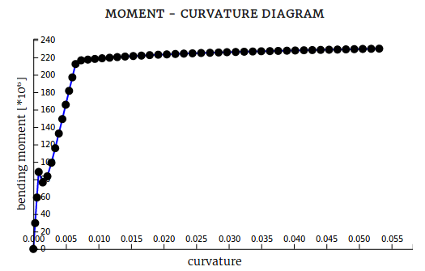

Welcome to M-N-Kappa’s documentation!¶
M-N-Kappa¶
M-N-Kappa is a free online moment curvature calculation tool.
It is based on the moment curvature analysis method, which is used to determine the load-deformation behaviour of concrete sections based on non linear material stress-strain relationships.
A moment curvature diagram shows information about the bending stiffness of reinforced concrete beams and the amount of nonlinear behaviour of a section. The nonlinear behaviour in reinforced conrete sections are:
- cracking of the concrete
- yielding of the reinforcement
- plastic deformation of the concrete
- crushing of the concrete
An example of a moment curvature diagram is shown below.
Example of a moment curvature diagram.